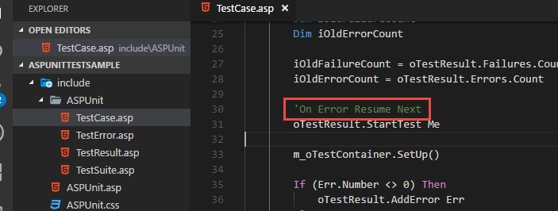
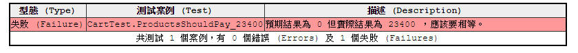
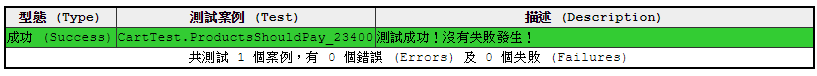
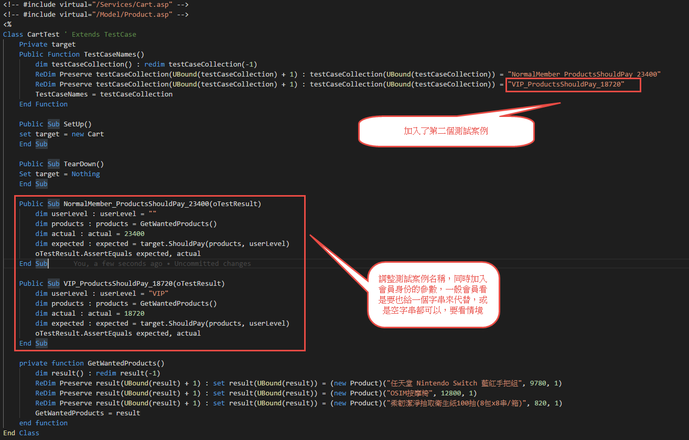
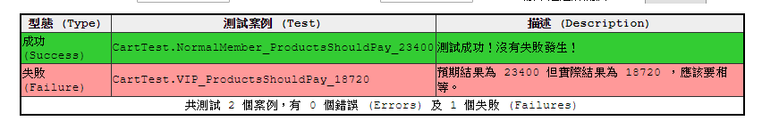
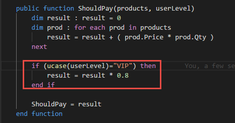
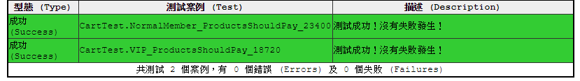

希望能透過這一篇文章，至少Demo出來怎麼樣透過ASP來做單元測試。謹以此篇獻給還在與ASP奮鬥的朋友們。
我們直接進入正題吧。
假設前端網站現在有一個購物車，使用者購買了好幾樣商品，每一樣商品都有它的價格；為了簡化範例，基本的屬性不會太多，但是真實世界的需求肯定是複雜許多，在這邊我們為了簡化範例，只挑重點的部分，也就是商品的名稱、價格及數量。前端的部分今天不談，我們專注在後端的部分。也就是今天的主題：ASP
小明是個苦逼的碼農，對未來沒有什麼期待，每天的樂趣除了跟客服拉低賽以外，剩下的就是在每個月的發薪日，拿薪水犒勞自己的汗水跟淚水。今天在購物網站看到了好幾樣商品，情不自禁的就給他刷卡買下去了，我們來看一下小明買了甚麼東西。
- 任天堂 Nintendo Switch 藍紅手把組，單價9780 x 1
- OSIM按摩椅，單價12800 x 1
- 柔韌潔淨抽取衛生紙100抽(8包x8串/箱)，單價820 x 1
嗯，看來小明壓力很大，我們也不要糾結商品了，想小明要買甚麼東西還花了我10分鐘。總之就是這樣了。
所以這三樣東西小明應該要付的錢是多少呢？9780 + 12800 + 820 = 23400
OKAY，那就開始我們的第一個測試程式吧….
好像忘了先說，我們在ASP可以透過ASPUNIT來做單元測試，我也是找了很久才找到這一套還可以用的，然後，抱歉我真的忘了出處在哪裡，畢竟是好多年前找到的東西。之前找到的時候有順便調整了一下，把訊息改成我比較喜歡的，然後改來改去，我發現原始版本忘了放哪邊了，好了，閒話到這邊，最終這篇文章的程式會放在GitHub，有興趣請自取。
aspunit單元測試框架必須要先架在IIS上面讓他先跑起來，這次的練習中，瀏覽器網址填入的路徑就指向/test/go.asp。
新增測試程式
因為打算要做的是購物車的價格計算，預期的Service類別應該就叫做Cart，這個類別將負責計算商品價格總價，所以我們就分別在Services目錄下建立一個Cart.asp，然後再Test目錄下建立一個CartTest.asp吧。
1 | ' /Test/CartTest.asp |
調整測試程式，使其可以運作
習慣上我會將asp的class基本語法以及常用的東西放在snippet裡面，因為asp沒有intellisense可以用，還是不要考驗自己的記憶力吧。而為了測試框架是否真的可以用，我會先讓他可以正常運作，之後才會開始開發。
而為了在asp環境偵錯，我也會先把框架的On Error Resume Next語法給註解掉，這樣在撰寫過程中真的有錯誤的話，可以直接透過IIS設定，將錯誤顯示在瀏覽器上，從而找到是哪一段出錯。

開始認真撰寫第一個測試程式
藉由TDD的概念，首先我們要先想好，我們期望未來Client端應該怎麼使用我們的程式。當然一定是越簡單越好，一看就知道怎麼用，然後很清楚明白這樣。
1 | Public Sub ProductsShouldPay_23400(oTestResult) |
我們用到了一個商品類別(Product)，透過建構式注入了商品的名稱、單價及數量，接著將牠放到陣列裡面全部塞給購物車，最後購物車應該要付23400塊錢。
因為用到了一個還不存在的商品類別，所以我們需要設計一下這個資料傳輸物件類別，讓測試程式能正常運行，順便將Service的ShouldPay()直接回傳0，讓他出現第一個紅燈。
1 | Class Product |

點亮第一個綠燈
1 | public function ShouldPay(products) |

TDD的概念雖然有一個BabyStep的部分，照理說我不應該在這一個測試就直接寫成單價乘數量加總，因為測試案例中並沒有體現這一點。不過當你如果很熟悉的話，自然這個步伐可以稍微的跨大一點。所以，在TDD開發中，測試案例的撰寫是一個非常重要的學問，因為每個測試案例都應該是一個關鍵的情境，關於這個有一本書很推薦 驗收測試驅動開發 ATDD實例詳解。
重構
剛剛測試程式那邊在產生假資料的時候還在用productABC，最後還要用一個Array把它串再一起。如果東西很多我不就看的很累？所以我決定把它抽象出來，主要的程式就保留意圖就好。
1 | Public Sub ProductsShouldPay_23400(oTestResult) |
重構完畢，測試看看有沒有問題。這個步驟很重要喔，改壞了馬上就知道。
加入會員打折的規則
我們接下來來模擬一個需求，如果客戶是VIP會員的話，那就打八折吧。
我希望在計算的時候從外面傳入參數，直接告訴我會員的身份。而不用建構式注入的方式給購物車，這樣子購物車就不會跟會員身份綁在一起。萬一哪一天要做兩種價格的呈現讓使用者一次看到，喔，原來我如果是VIP會員的話，我比一般會員節省了多少錢這樣。。。。這樣子的話我只要呼叫兩次方法，而不用建立兩個Cart的instance
這邊因為沒有C#的Enum可以用，我們還是用傳統的字串來表明身份吧。同時因為我們以前的情境也不可以壞掉，所以我會再補上一個測試案例給VIP，而一般會員與VIP的測試案例，在呼叫Cart.ShouldPay的時候，因為簽章方法需要額外的會員身份，所以也要跟著改。很重要的一點是，既然加入了一些新的變因，原先的測試案例名稱好像也顯得不合時宜，需要一併調整。


第二個紅燈出現，讓我們來消滅它吧。


到這邊為止，大概就是Demo一下如何在ASP裡面也可以透過單元測試來保護你的程式。
當然這個範例還可以繼續玩下去，玩得很誇張，把一些設計模式加入進來，例如用策略模式來替換掉ShouldPay裡面的演算法。但是我現在這篇文章已經打了三小時，肚子很餓了。
以後有衝動再寫吧。